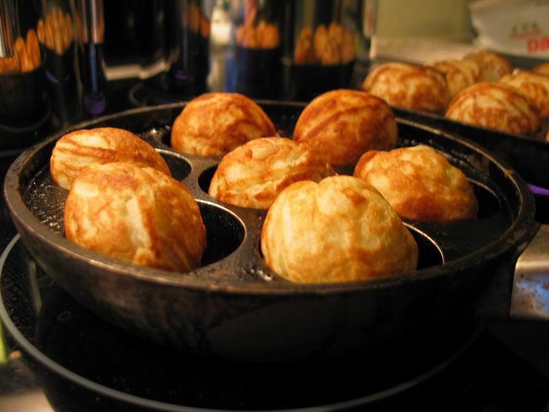
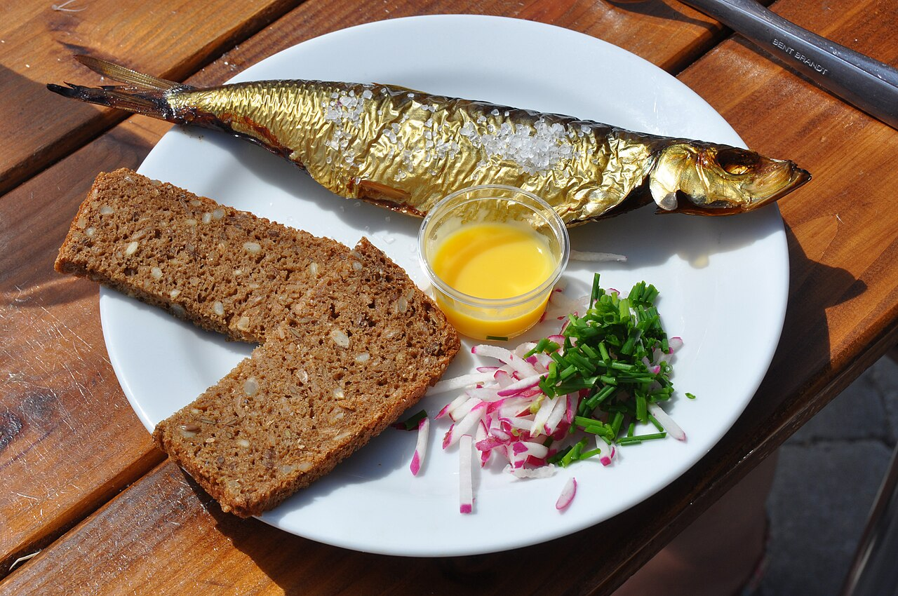

Keturios dienos Kopenhagoje: senamiestis, karališkosios pilys, kanalai, meno muziejai ir gatvės maistas. Paskutinį vakarą — Deep Purple koncertas Royal Arenoje. Visos dienos suplanuotos pėsčiomis ir viešuoju transportu (metro, autobusas, kanalo laivelis), automobilio nuomos nėra.
🏠 Nakvynė
Apartment with canal view
Adresas: Kenny Drews Vej 37, 2450 København (Sydhavnen / Pietų uostas rajonas)
Įvertinimas: 9,0/10 · 50 atsiliepimų (Booking.com)
Jaukus apartamentas su kanalo vaizdu Kopenhagos Sydhavnen rajone — vienas miegamasis, pilnai įrengta virtuvė, valgomasis ir terasa su vandens bei sodo vaizdu. Rajonas naujas ir ramus, bet kiek toliau nuo senamiesčio — skirkite papildomai 10–15 min kelionei viešuoju transportu iki lankytinų vietų.


Nuotraukos: Booking.com


🌧 Planas B (jei blogas oras)
Orui jautru: Vor Frelsers Kirke bokšto lipimas vyksta atvirais sraigtiniais laiptais lauke ir uždaromas vėjuotu/lietingu oru; pasivaikščiojimas Nyhavn krantine be pastogės taip pat prastai tinka dulksnai ir vėjui.
Interjerai ir dengtas turgus vietoje bokšto ir Nyhavno
🚗 Viso važiavimo: ~36 min.
🧭 Plano B maršrutas Google Maps
Patarimas: Designmuseum Danmark penktadieniais dirba 10:00–18:00, o Vor Frelsers Kirke interjeras nemokamas 11:00–15:30 – į bokštą kilti verta tik jei vėjas aprimtų.
Planas B baigiasi toje pačioje vietoje kaip ir pagrindinis planas – apartamentuose Sydhavnene.


🌧 Planas B (jei blogas oras)
Orui jautru: Pasivaikščiojimas Christianijos gatvėmis, Amalienborgo kiemo stebėjimas ir atviros valties kanalų ekskursija prastai tinka stipriam vėjui (iki 39,5 km/h) ir lietui; vakarienė lauke Reffen gatvės maisto parke šaltyje reikalauja šiltos aprangos ir dengtų prekystalių.
Rūmai ir muziejai vietoje kanalų plaukimo
🚗 Viso važiavimo: ~38 min.
🧭 Plano B maršrutas Google Maps
Patarimas: Nationalmuseet šeštadieniais atviras 10:00–17:00 ir nuolatinė ekspozicija nemokama (Ny Vestergade 10) – geras užpildas vietoje lauko plaukimo kanalais; SMK tą pačią dieną dirba iki 18:00.
Planas B baigiasi toje pačioje vietoje kaip ir pagrindinis planas – Reffen.
🎉 Deep Purple koncertas Royal Arenoje šį vakarą – durys atsidaro apie 18:00. Taip pat naktį iš šeštadienio į sekmadienį (spalio 24/25-osios naktis) laikrodžiai pasukami į žiemos laiką – naktis bus viena valanda ilgesnė, patikrinkite, ar telefonas atsinaujina automatiškai.


🌧 Planas B (jei blogas oras)
Orui jautru: Tivoli lauko atrakcionai spalio Helovino sezono metu stiprų vėją (iki 48 km/h) ar smarkų lietų saugumo sumetimais laikinai uždaromi.
Rūmai, muziejai ir architektūros centras vietoje Tivoli
🚗 Viso važiavimo: ~21 min.
🧭 Plano B maršrutas Google Maps
Patarimas: Dansk Arkitektur Center (BLOX) sekmadieniais atviras 10:00–18:00; parodos bilietas ~115 DKK, o kavinė su vaizdu į uostą veikia be bilieto.
Planas B baigiasi toje pačioje vietoje kaip ir pagrindinis planas – Royal Arena, Deep Purple koncertas.


🗺️ Žemėlapis
💰 Biudžetas
| Kategorija | Suma (4 keliautojams) | Pastaba |
|---|---|---|
| Skrydžiai KUN↔CPH | 517 € | Kaina tik su rankiniu bagažu (be registruoto bagažo); jei reikės lagaminų, +~25–45 €/krepšiui/kryptimi/asm. Pirkti kuo greičiau, kainos artėjant datai dažnai kyla. |
| Nakvynė (3 naktys) | 780 € | Patikrinkite tiksliai Booking.com puslapyje, ar tai bendra kaina, ar kaina už naktį |
| Maistas (4 dienos) | 748 € | Pagal šiame plane nurodytas vietas, įskaitant pusryčius |
| Bilietai į lankytinas vietas ir Deep Purple koncertas | 942 € | Pilys, muziejai, bokštai, kanalų plaukiojimas ir Deep Purple koncertas (95 €/asm.) |
| Automobilio nuoma | 0 € | Automobilis šioje kelionėje nenuomojamas |
| Kuras | 0 € | Nereikalinga, nes automobilis nenuomojamas |
| Iš viso (tikėtina) | ~2 987 € | ≈ 747 €/asmeniui (nuo ~2 700 € iki ~3 378 €) |
ℹ️ Praktinė informacija
- Dokumentai: galiojantis pasas ar asmens tapatybės kortelė – Danija yra Šengeno erdvėje, vizos ES piliečiams nereikia.
- Valiuta: Danijos krona (DKK), ne euras. Kortelės priimamos beveik visur, net smulkiems pirkiniams – vis dėlto turėkite šiek tiek grynųjų Christianijai (ten bankomatų mažai) ir mažiems gatvės prekystaliams.
- Arbatpinigiai: neprivalomi – aptarnavimas įskaičiuotas į sąskaitą. Galima apvalinti sumą arba palikti ~10 % tik už išskirtinį aptarnavimą.
- Sveikata: pasiimkite EHIC (Europos sveikatos draudimo kortelę) – nemokamas ar sumažintas gydymas ES piliečiams.
- Avarinis numeris: 112 (policija, gaisrinė, greitoji, nemokamas skambutis). Nemedicininė konsultacija: 1813 (kalbama angliškai).
- Viešojo transporto bilietai: pirkite „Rejsebillet" programėlėje arba automate stotyje; intensyviai lankant miestą gali apsimokėti 24 val. City Pass.
- Papročiai: danai vertina punktualumą ir eilių laikymąsi. Dviračių takai (cykelsti) – rimtas dalykas, niekada neikite jais pėsčiomis.
- Sauga: Kopenhaga apskritai labai saugi; įprastas budrumas turistinėse vietose (Nyhavn, Strøget). Christiania saugu dienos metu, vakare venkite, Pusher Street zonoje nuotraukų nedarykite.
- Pirmą dieną iš oro uosto patogiausia iškart M2 metro linija pasiekti Christianshavn ir Vor Frelsers Kirke – tiesioginis traukinys, persėdinėti nereikia.
- Apartamentai įsikūrę Sydhavnen rajone, kiek toliau nuo senamiesčio ir Christianshavn – kelias į visas lankytinas vietas ir oro uostą patogus ir asfaltuotas, tačiau skirkite papildomai 10-15 minučių kelionei autobusu, traukiniu ar metro.
- Šeštadienį po pasiplaukiojimo kanalais patogiausia iki Reffen plaukti Havnebusu tiesiai nuo Nyhavno prieplaukos – galioja tas pats bilietas kaip autobusui ar metro.
- Po šeštadienio Deep Purple koncerto Royal Arenoje (baigiasi apie 22:30) grįžtant į Sydhavnen, iš anksto pasitikrinkite vakarinio S-traukinio ar autobuso tvarkaraštį.
- Naktį iš šeštadienio į sekmadienį (spalio 24/25-osios naktis) laikrodžiai pasukami į žiemos laiką – naktis bus viena valanda ilgesnė, patikrinkite, ar telefonas atsinaujina automatiškai.
- Pirmadienį dauguma Kopenhagos muziejų (tarp jų Nationalmuseet) uždaryti – ryto pasivaikščiojimui pasirinktas Frederiksberg Have parkas visada atviras ir nemokamas.
- Paskutinę dieną į oro uostą atvykstama apie 2,5 val. prieš skrydį – registracijai, bagažo pridavimui ir pietums laiko pakanka.
☁️ Orų prognozė
Tikslesnė prognozė atsinaujins artėjant kelionei – šios reikšmės jau rodo tikėtiną orą visoms keturioms dienoms.
🎒 Ką pasiimti
- Visi skysčiai talpyklose iki 100 ml, sudėti į vieną permatomą 1 L maišelį – saugos patikrai oro uoste.
- Danijos elektros lizdai (Europlug/Type C) sutampa su Lietuvos – papildomas adapteris nereikalingas.
- Dėl 48 km/h vėjo 3-ią dieną skėtis beprasmis – pasikliaukite gera neperšlampama striukė su gobtuvu.
- Vor Frelsers Kirke bokštas uždaromas dideliam vėjui/lietui – planuokite lanksčiai ir sekite orų atnaujinimus kelionės metu.
- Banko kortelė (bekontaktinė) tiesiogiai priimama Kopenhagos metro/busų turnikete – atskiro transporto bilieto pirkti nebūtina.
Dokumentai ir pinigai
Apranga (šaltam, lietingam ir vėjuotam orui, 7–11 °C)
Transportui ir orientacijai
Higiena ir sveikata
Elektronika
🍽️ Kur pavalgyti
1 diena
Café Wilder – Wildersgade 56. Prancūziškas-daniškas bistro, netoli Vor Frelsers Kirke. ~22 €/asm. Jauki Christianshavn rajono kavinė už turistinių takų, mėgstama vietinių. 📍 Google Maps
Hallernes Smørrebrød – Torvehallerne – Frederiksborggade 21. Smørrebrød prekystalis Torvehallerne turguje. ~18 €/asm. Vienas geriausiai vertinamų smørrebrød prekystalių (4,9/5, 2600+ atsiliepimų). 📍 Google Maps
Café Dyrehaven – Sønder Boulevard 72. Tradicinė danų kavinė-bodega, vakarienė arti apartamentų. ~20 €/asm. Vietinių pamėgta, nepretenzinga Vesterbro kavinė su namų gamybos duona ir tikru, pigiu danų smørrebrød. 📍 Google Maps
2 diena
Restaurant Schønnemann – Hauser Plads 16. Istorinis smørrebrød restoranas nuo 1877 m., netoli Amalienborgo. ~32 €/asm. Vienas labiausiai vertinamų smørrebrød restoranų Kopenhagoje (4,7/5 Tripadvisor, #38 iš 2653 restoranų). 📍 Google Maps
Reffen – Refshalevej 167A. Gatvės maisto turgus prie vandens. ~15 €/asm. Didžiausias Šiaurės Europos gatvės maisto turgus – 30+ prekystalių, savo alaus darykla. 📍 Google Maps
3 diena
Café Glyptoteket – Dantes Plads 7. Muziejaus kavinė žiemos sode. ~16 €/asm. Netikėtai rami vieta pietums tarp palmių, puikiai tinka lietingai dienai. 📍 Google Maps
Field's Food Lounge – Arne Jacobsens Allé 12. Prekybos centro maisto erdvė prieš koncertą. ~14 €/asm. Greita ir patogi vakarienė čia pat prie Ørestado metro stoties. 📍 Google Maps
4 diena
Hallernes Smørrebrød – Lufthoste – Kastrup lufthostas, Terminalas 2 (saugumo zona). Smørrebrød užkandinė oro uoste. ~18 €/asm. Tikras danų smørrebrød meniu tiesiog saugumo zonoje – paskutinė proga paragauti prieš skrydį. 📍 Google Maps
🍸 Ypatingi barai
Nimb Bar – netoli Tivoli (3 diena). Elegantiškas baras buvusioje 1909 m. baliaus salėje mauriškojo stiliaus Nimb rūmuose Tivoli parko viduje – sietynai, kokteiliai ir viena gražiausių istorinių erdvių mieste. 📍 Google Maps
Ruby – netoli Christiansborgo pilies (3 diena). Paslėptas už nepažymėtų durų 1740-ųjų senamiesčio name – vienas žymiausių pasaulio kokteilių barų. 📍 Google Maps
Nemoland – Christianijos širdyje (2 diena). Kulto vieta alternatyvios bendruomenės atmosferoje – lauko ir vidaus baras, verta užsukti grįžtant vakare, jei lieka laiko. 📍 Google Maps
🥟 Ką paragauti

Smørrebrød
Atviras ruginės duonos sumuštinis su įvairiais priedais – silke, krevetėmis, kiaušiniu, mėsos paštetu ar žuvimi. Danijos kulinarinis simbolis.
Kaina: 8–20 €
Kur paragauti: Hallernes Smørrebrød – Torvehallerne, Restaurant Schønnemann, Café Dyrehaven, Hallernes Smørrebrød – Lufthoste
Autorius: Kritzolina, CC BY-SA 4.0, šaltinis

Kepta kiaulienos pilvelio dalis su petražolių padažu (Stegt flæsk med persillesovs)
Danijos nacionaliniu patiekalu laikoma traški kepta kiauliena su bulvėmis ir baltu petražolių padažu.
Kaina: 15–20 €
Kur paragauti: Restaurant Schønnemann, Café Dyrehaven
Autorius: XYZA-2400, CC0, šaltinis

Frikadelės (Frikadeller)
Keptos kiaulienos ir jautienos faršo kukulės, patiekiamos su virtomis bulvėmis, padažu ir raudonųjų kopūstų salotomis.
Kaina: 12–18 €
Kur paragauti: Café Dyrehaven, Restaurant Schønnemann
Autorius: cyclonebill, CC BY-SA 2.0, šaltinis

Obuolių spurgelės (Æbleskiver)
Apvalios, blynams giminingos keptos tešlos kamuoliukai su obuolių gabaliukais, patiekiami su uogiene ir cukraus pudra – tipiškas rudens / adventinio laikotarpio skanėstas.
Kaina: 5–10 €
Kur paragauti: Café Dyrehaven
Autorius: JoachimK, Public domain, šaltinis

Rūkyta silkė (Røget sild)
Rūkyta silkė ant ruginės duonos, dažnai su žaliu svogūnu ir trynio padažu – klasikinis smørrebrød priedas.
Kaina: 8–14 €
Kur paragauti: Restaurant Schønnemann, Hallernes Smørrebrød – Torvehallerne
Autorius: cyclonebill from Copenhagen, Denmark, CC BY-SA 2.0, šaltinis

Kepta kiauliena su traškia odele (Flæskesteg)
Sekmadienio pietų klasika – keptos kiaulienos kepsnys su traškia odele, raudonaisiais kopūstais ir bulvėmis padaže.
Kaina: 15–20 €
Kur paragauti: Café Dyrehaven, Restaurant Schønnemann
Autorius: cyclonebill from Copenhagen, Denmark, CC BY-SA 2.0, šaltinis
Kepenėlių paštetas (Leverpostej)
Keptas kiaulienos kepenėlių paštetas ant ruginės duonos, dažnai su spirgučiais ir marinuotais burokėliais.
Kaina: 8–12 €
Kur paragauti: Hallernes Smørrebrød – Torvehallerne, Restaurant Schønnemann
✈️ Grįžtamoji informacija
Apartamentų atsiskaitymas: ne vėliau kaip 12:00, 4 diena (2026-10-26)
Skrydis namo: CPH → KUN, išvykimas 15:15, atvykimas 17:45
Kontaktai nenumatytiems atvejams: ______________ (įrašykite prieš kelionę)